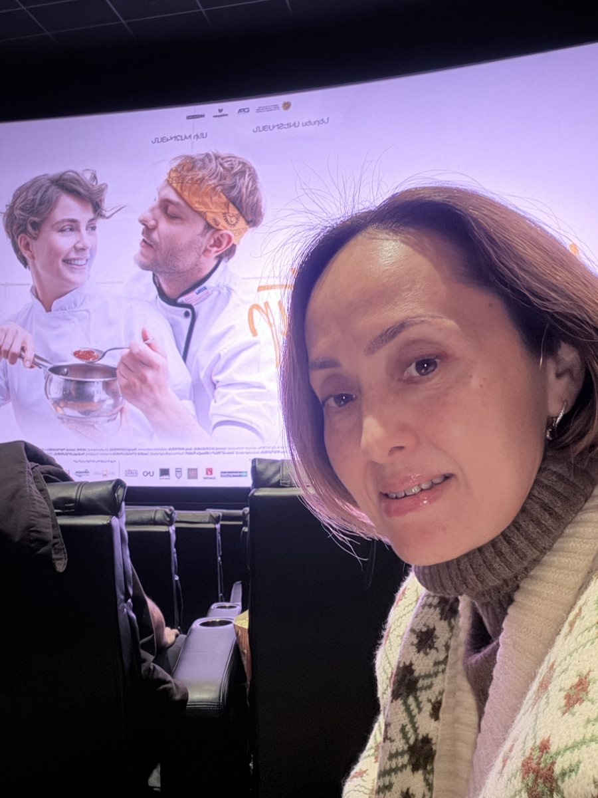
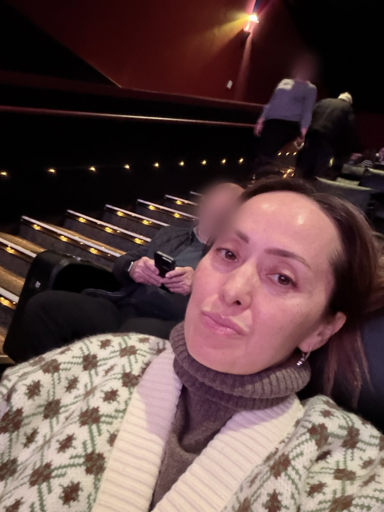

культура · кино · 14 ноября 2026
Сегодня поехала в город на фильм Spoonful of Love 🍲

ложка любви
План: турецкий фильм. Запасной план: ну хотя бы английские субтитры. Реальность: весь фильм на армянском, без субтитров, а я знаю ровно ноль армянских слов 😅
Потом огляделась. В зале был весь армянский Нью-Йорк. Столько армян в одном месте я ещё не видела, и было чувство, будто я в гостях на очень большом семейном ужине 🇦🇲
И почему-то это было восхитительно. Успешный шеф сбегает от прежней жизни и оказывается в маленьком ресторане в Армении, где талантливая, но закрытая девушка, забытые рецепты и неожиданные чувства заставляют его заново понять, что по-настоящему важно.

до того, как погас свет
После фильма у меня даже взяли короткое интервью. Я честно сказала: мне очень понравилось, хотя по-армянски я не знаю ни слова. Кажется, это был лучший отзыв за вечер 😄
А ещё я открыла для себя чудесную песню: Mi Gdal Ser, Reincarnation & Roland Gasparyan 🎶 слушать на YouTube Music →
Оказалось, это и значит «ложка любви». Так что теперь я знаю первые три слова по-армянски, и песня у меня на повторе
AMC Empire, 42-я улица
Еде, любви и хорошей музыке перевод не нужен ❤️
← культура